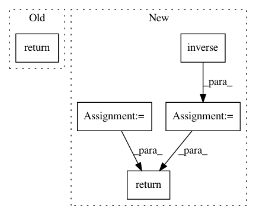

d496aaefc795e176b615815e9f30f335860f013b,geomstats/lie_group.py,LieGroup,group_log,#LieGroup#Any#Any#,59
Before Change
of the point point.
if base_point is None:
return self.group_log(point, self.identity)
else:
raise NotImplementedError(
"The group logarithm is not implemented.")
After Change
base_point = self.regularize(base_point)
if base_point is self.identity:
group_log = self.group_log_from_identity(point)
else:
jacobian = self.jacobian_translation(point=base_point,
left_or_right="left")
point_near_id = self.compose(self.inverse(base_point), point)
group_log_from_id = self.group_log_from_identity(
point=point_near_id)
group_log = np.dot(jacobian, group_log_from_id)
return group_log
def group_exponential_barycenter(self, points, weights=None):
Compute the group exponential barycenter.
In pattern: SUPERPATTERN
Frequency: 4
Non-data size: 5
Instances
Project Name: geomstats/geomstats
Commit Name: d496aaefc795e176b615815e9f30f335860f013b
Time: 2018-01-22
Author: ninamio78@gmail.com
File Name: geomstats/lie_group.py
Class Name: LieGroup
Method Name: group_log
Project Name: tensorly/tensorly
Commit Name: 975c84b15a5bdec14d2b326b985e2ac15bc099b8
Time: 2018-09-19
Author: zli@wustl.edu
File Name: tensorly/backend/mxnet_backend.py
Class Name:
Method Name: inverse
Project Name: tensorly/tensorly
Commit Name: 6be1f6d9be00190becf2ea3ee0eee28ab3af8943
Time: 2018-09-08
Author: zli@wustl.edu
File Name: tensorly/backend/mxnet_backend.py
Class Name:
Method Name: inverse
Project Name: arraiy/torchgeometry
Commit Name: 20a9acca2636512522116601ae09c6be0408b486
Time: 2020-03-19
Author: ducha.aiki@gmail.com
File Name: kornia/geometry/transform/imgwarp.py
Class Name:
Method Name: warp_affine